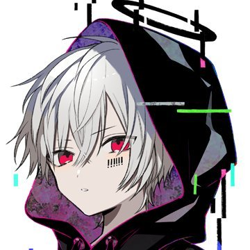
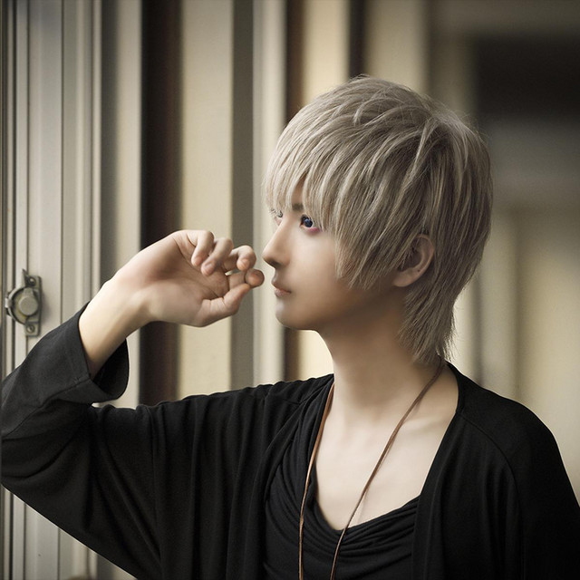
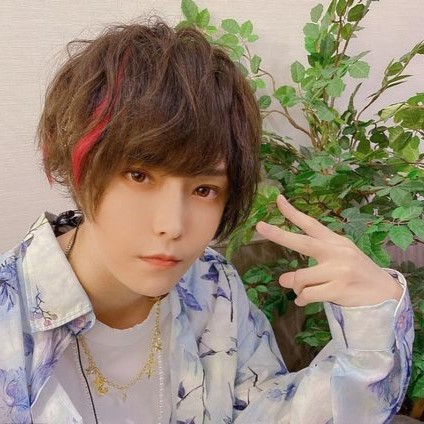
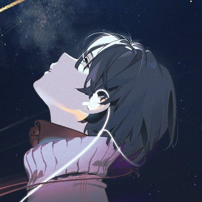
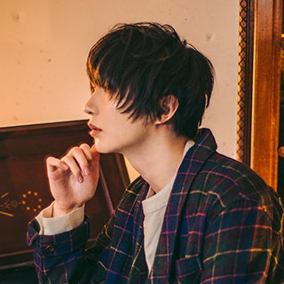
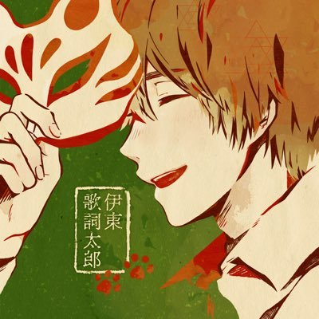
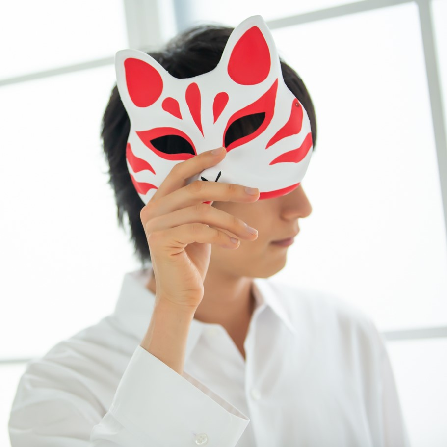

目次
唱見一詞源於日本視頻網站niconico，是從日語「歌ってみた」而衍生出的詞，也叫做歌見。他們用聲音合成技術Vocaloid製作出來的初音未來等Vocaloid歌手歌唱的V曲翻唱，並在視頻網站上發出自己翻唱作品的業餘歌手。他們之中有些甚至都不輸給專業歌手！

mafumafu從2010年開始在niconico投稿自己的作品。2014年，和另一名人氣唱見そらる（Soraru）成立了2人組合「After the Rain」。之後更是舉辦了多次演唱會，開設了自己的YouTube頻道。

天月(天月-あまつき-)從2008年開始在nico動畫投稿作品。2014年以KINGRECORD公司旗下歌手身份正式出道。不光是作為一名唱見，還參加演劇表演，朗讀劇等，朝各方面發展中。

そらる（Soraru）從2008年開始在niconico上發表作品。和同樣是唱見的mafumafu成立組合「After the Rain」（簡稱ATR）。因為超有魅力的低沉聲音收穫了很多女粉絲！


名字的由來是因為本人喜歡黑色和黑貓。 96貓身為一名女性，因為音域特別廣泛，不論是可愛還是帥氣的聲音都可以駕馭的高人氣唱見。

名字的由來是源於喜歡的歷史人物【伊東甲子太郎】，2014年發布個人第一張完整專輯《一意專心》，出道公司為TOY'S FACTORY。不光是作為歌手，還著作了自己的小說《家庭教室》。